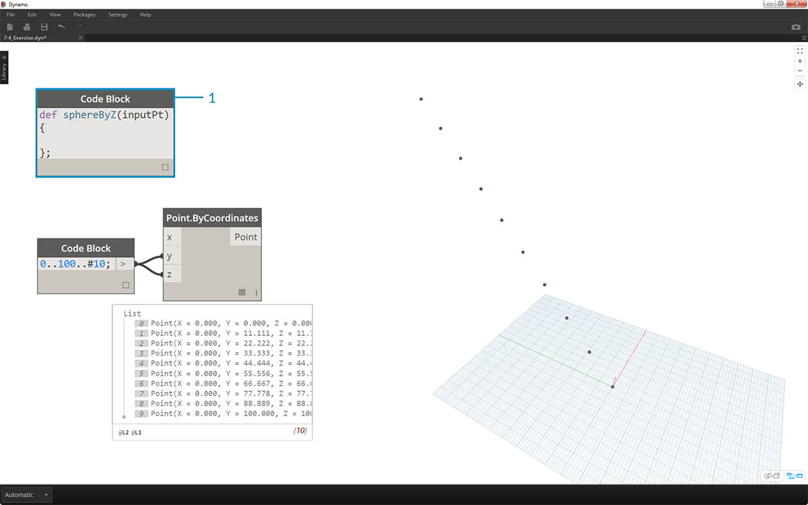
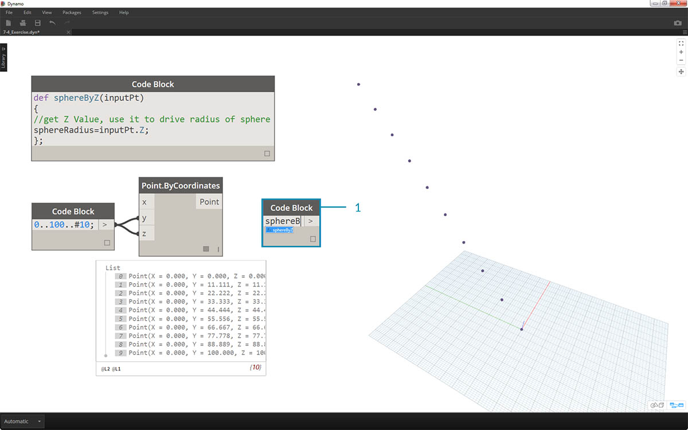

程式碼塊函數
可以在程式碼塊中建立函數，然後在 Dynamo 定義中的其他位置重新呼叫函數。此作業會在參數式檔案中建立另一個控制層，可視為自訂節點的文字版本。在此案例中，「父系」程式碼塊可隨時存取，可在圖表中的任何位置找到。無需使用線！
父系
第一行包含關鍵字「def」，然後依次是函數名稱與輸入的名稱 (在括號中)。大括號定義函數的本體。使用「return =」傳回值。定義函數的程式碼塊沒有輸入或輸出連接埠，因為會從其他程式碼塊呼叫這些程式碼塊。
/*This is a multi-line comment,
which continues for
multiple lines*/
def FunctionName(in1,in2)
{
//This is a comment
sum = in1+in2;
return sum;
};
子系
使用同一檔案中的其他程式碼塊，只需提供名稱與相同數量的引數即可呼叫函數。其工作方式類似於資源庫中的現成節點。

FunctionName(in1,in2);
練習
下載此練習隨附的範例檔案 (按一下右鍵，然後按一下「連結另存為...」)。附錄中提供範例檔案的完整清單。Functions_SphereByZ.dyn
在本練習中，我們將進行根據輸入點清單建立圓球的一般定義。這些圓球的半徑由每個點的 Z 性質驅動。

接下來先建立介於 0 到 100 之間的一系列十個值。將這些值插入至 Point.ByCoordinates 節點，以建立對角線。

- 建立程式碼塊，並使用以下程式碼行引入我們的定義：
def sphereByZ(inputPt){ };
inputPt 是我們為了表示驅動函數的點而提供的名稱。到現在為止，函數不會執行任何作業，但我們將在後續步驟中建置此函數。

- 加入至程式碼塊函數後，我們放置註釋與 sphereRadius 變數，它會查詢每個點的 Z 位置。請記住，inputPt.Z 作為類函數不需要括號。這是對既有元素性質的查詢，因此不需要任何輸入：
def sphereByZ(inputPt,radiusRatio) { //get Z Value, use it to drive radius of sphere sphereRadius=inputPt.Z; };

- 現在，我們在其他 code block 中呼叫建立的函數。如果在圖元區上按兩下以建立新的 code block，然後鍵入 sphereB，我們會注意到 Dynamo 建議使用我們定義的 sphereByZ 函數。您的函數已加入至 intellisense 資源庫！太酷了。

- 現在，我們呼叫函數，並建立稱為 Pt 的變數以插入先前步驟中建立的點：
sphereByZ(Pt)
- 我們注意到輸出是所有空值。為何會發生這種情況？定義函數時，我們會計算 sphereRadius 變數，但沒有定義函數應傳回哪些項目做為輸出。我們可以在下一步中修正此問題。

- 我們需要加入程式碼行
return = sphereRadius;至 sphereByZ 函數，以定義函數的輸出，這是重要的步驟。- 現在，我們可以看到程式碼塊的輸出會提供每個點的 Z 座標。

現在，我們將編輯父系函數以建立實際的圓球。
- 我們首先使用以下程式碼行定義圓球：
sphere=Sphere.ByCenterPointRadius(inputPt,sphereRadius);- 接下來，將傳回值變更為 sphere 而不是 sphereRadius：
return = sphere;。在 Dynamo 預覽中將產生一些巨大的圓球！

- 為了修改這些圓球的大小，接下來加入除數：
sphereRadius = inputPt.Z/20;以更新 sphereRadius 值。現在，我們可以看到單獨的圓球，並開始理解半徑與 Z 值之間的關係。

- 在 Point.ByCoordinates 節點上，透過將鑲邊從最短清單變更為叉積，我們將建立點的格線。sphereByZ 函數仍完全有效，因此所有點會建立半徑以 Z 值為基礎的圓球。

- 為了進行測試，我們將原始數字清單插入至 Point.ByCoordinates 的 X 輸入。現在，將產生有一塊圓球。
- 注意事項：如果在您的電腦上需要花很長時間來執行此計算，請嘗試將 #10 變更為諸如 #5 等數字。

- 請記住，我們建立的 sphereByZ 函數是一般函數，因此可以呼叫先前課程中的螺旋線，並對其套用該函數。

接下來是最後一步：運用使用者定義的參數驅動半徑比。若要執行此作業，我們需要為函數建立新輸入，並使用參數取代除數 20。
- 將 sphereByZ 定義更新為：
def sphereByZ(inputPt,radiusRatio) { //get Z Value, use it to drive radius of sphere sphereRadius=inputPt.Z/radiusRatio; //Define Sphere Geometry sphere=Sphere.ByCenterPointRadius(inputPt,sphereRadius); //Define output for function return sphere; };
- 加入 ratio 變數至輸入：
sphereByZ(Pt,ratio);以更新子系程式碼塊，將滑棒插入至新建立的程式碼塊輸入，並根據半徑比變更半徑的大小。